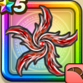

スーパーノヴァ
攻略班 7.0点 / ザメハムーンサルト素敵なダンスシャイニングエッジスーパーノヴァ※錬成で強化可能
くわしい特徴
【レベル別習得スキル】 Lv1【スパスタ】さいだいHP+5 Lv1ザメハ（消費MP：9）仲間全員のねむりをなおす Lv10ムーンサルト（消費MP：3）飛行系に威力250%それ以外の系統には130%の体技ダメージを与える Lv15素敵なダンス（消費MP：10）素敵なダンスで敵1体を踊りにさそう Lv20シャイニングエッジ（消費MP：22）敵1体に威力330%の体技ダメージを与え、確率で自分のみかわし率を上げる Lv30スーパーノヴァ（消費MP：29）敵全体に280％のメラ属性体技ダメージを与える Lv35エレメント系へのダメージ+5% Lv40ゾンビ系へのダメージ+5% Lv45【スパスタ】とくぎHP回復効果+2% Lv50攻撃力+12錬成スキル改1ゾンビ系へのダメージ+10%改2スーパーノヴァ改（消費MP：38）敵全体に威力330%のメラ属性体技ダメージを与え、仲間全員のHPを少し回復する改3エレメント系へのダメージ+10%改4錬成ぶき特別演出解放・メガモン討伐結果発表時に特別演出が追加・武器の見た目に特別なエフェクトが追加 【限界突破スキル】 1凸スキルの斬撃・体技ダメージ+5% 2凸スキルの斬撃・体技ダメージ+5% 3凸スキルの斬撃・体技ダメージ+5% 4凸スキルの斬撃・体技ダメージ+5%